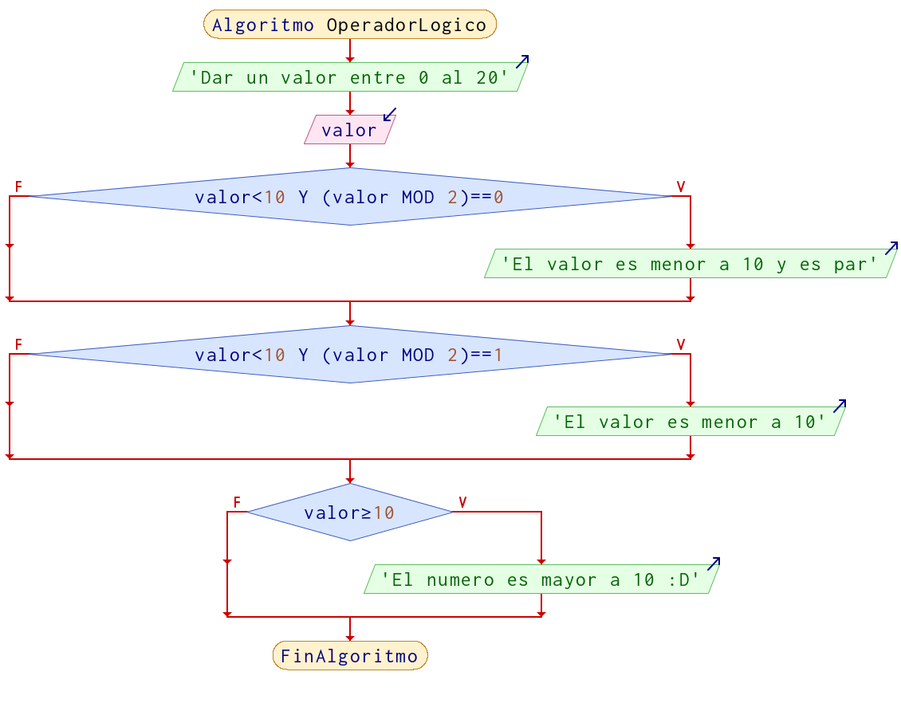
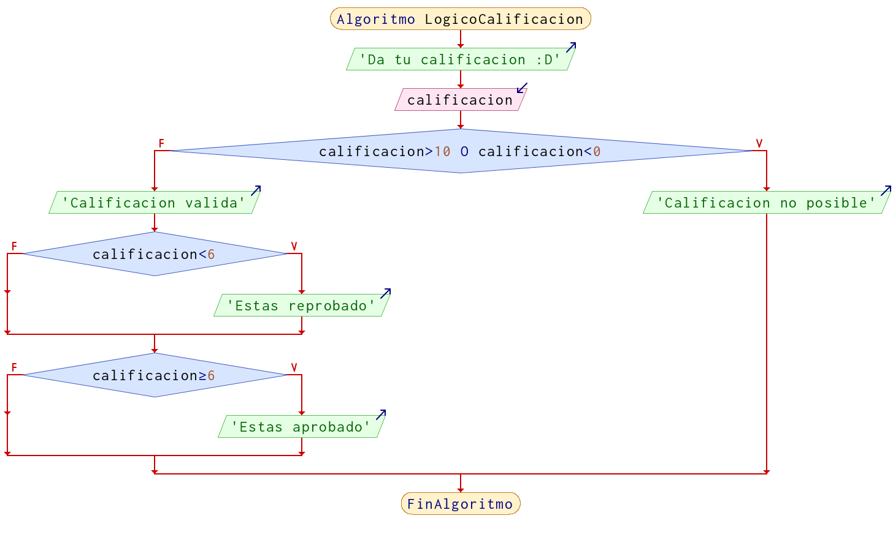

Operadores lógicos
Un operador lógico sirve para combinar comparaciones y en función del resultado tomar una decisión, comprende de 3 operadores
(hay mas pero no lo veremos aquí) que son AND, OR y NOT. Con todo ello para realizar varias validaciones y obtener un resultado booleano.
Las tablas de verdad de los operadores:
AND (Y)
| Entrada 1 | Entrada 2 | Salida |
|---|---|---|
false |
false |
false |
false |
true |
false |
true |
false |
false |
true |
true |
true |
Regla
AND nos dice que mientras exista a la entrada un false, tendremos un valor false a la salida
OR (O)
| Entrada 1 | Entrada 2 | Salida |
|---|---|---|
false |
false |
false |
false |
true |
true |
true |
false |
true |
true |
true |
true |
Regla
OR nos dice que mientras exista a la entrada un true, tendremos un valor true a la salida
NOT (NO) (Inverter)
| Entrada | Salida |
|---|---|
false |
true |
true |
false |
Regla
NOT nos dice que todo lo que recibe lo invierte.
Sintaxis con operadores lógicos
La forma en la que se escriben las comparaciones con operadores lógicos es:
| Izquierda | Centro | Derecha |
|---|---|---|
comparación |
operador lógico |
comparación |
(a == b) |
&& |
(x > y) |
(5 == 8) |
&& |
(9 > 4) |
(a >= b) |
|| |
(0 == 8) |
(10 <= x) |
&& |
(1 != -8) |
(a <= 2) |
|| |
(0 == 8) |
En el caso de not aplica solo a una comparación:
| Aplicación | Resultado |
|---|---|
!true |
false |
!(3 == 3) |
false |
!(6 >= 1) |
false |
!(1 != 1) |
true |
!(3 < 3) |
true |
Se pueden concatenar (unir) n comparaciones con operadores lógicos, pero siempre se debe utilizar el operador para poder unir mas comparaciones, ejemplo:
(5 == 8) && (9 > 4) || (a >= b) || (0 == 8) && !(2 == 2)
Ejemplos de comparación
| Descripción | Resultado |
|---|---|
(9 > 4) && (3 < 6) |
true |
(8 == 3) || (2 != 3) |
true |
!true |
false |
(5 == 8) && (9 > 4) |
false |
(0 >= -5) || (0 == 8) |
true |
(10 <= 5) && (1 != -8) |
false |
!(2 == 2) |
false |
Ejemplos
Ejemplo 1
Solicitar un número de entre 0 al 20, si el número es menor a 10 y par, indicar que "el número es par y menor a 10"; si es menor a 10, pero no es par dar el mensaje "Número menor a 10", de lo contrario que indique que es mayor a 10.
Pseudocódigo
Algoritmo OperadorLogico
Imprimir "Dar un valor entre 0 al 20"
Leer valor
Si valor < 10 Y (valor % 2) == 0 Entonces
Imprimir "El valor es menor a 10 y es par"
FinSi
Si valor < 10 Y (valor % 2) == 1 Entonces
Imprimir "El valor es menor a 10"
FinSi
Si valor >= 10 Entonces
Imprimir "El numero es mayor a 10 :D"
FinSi
FinAlgoritmo
Diagrama de Flujo

Ejemplo 2
En una variable almacena la calificación, se debe verificar el valor de la calificacion es valida; es decir, calificaciones arriaba de 10 y abajo de 0 no son posibles, la calificación reprobatoria es por debajo de 6 y aprobatoria arriaba de 6.0.
Pseudocódigo
Algoritmo LogicoCalificacion
Escribir 'Da tu calificacion :D'
Leer calificacion
Si calificacion > 10 O calificacion < 0 Entonces
Imprimir "Calificacion no posible"
SiNo
Imprimir "Calificacion valida"
Si calificacion < 6 Entonces
Imprimir "Estas reprobado"
FinSi
Si calificacion >= 6 Entonces
Imprimir "Estas aprobado"
FinSi
FinSi
FinAlgoritmo
Diagrama de Flujo

Nota: No es la única forma en la que se pueden realizar estos ejercicios, recuerda que lo importante es resolver el problema, que hayan mas o menos pasos, diferentes formulas, etc, no significa que este mal.